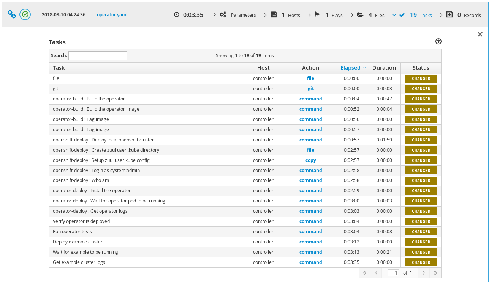
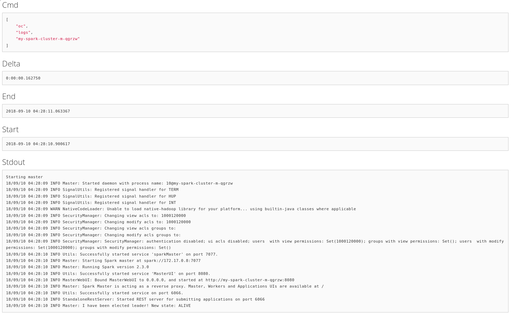
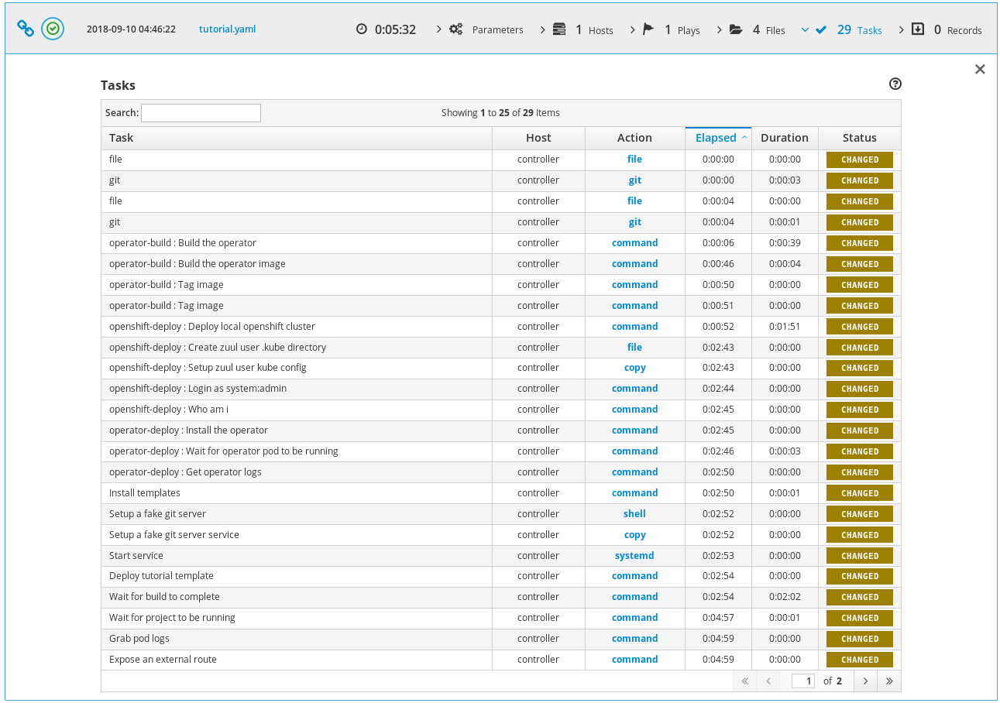
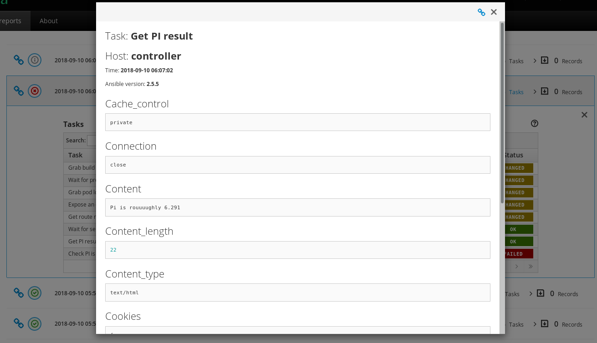
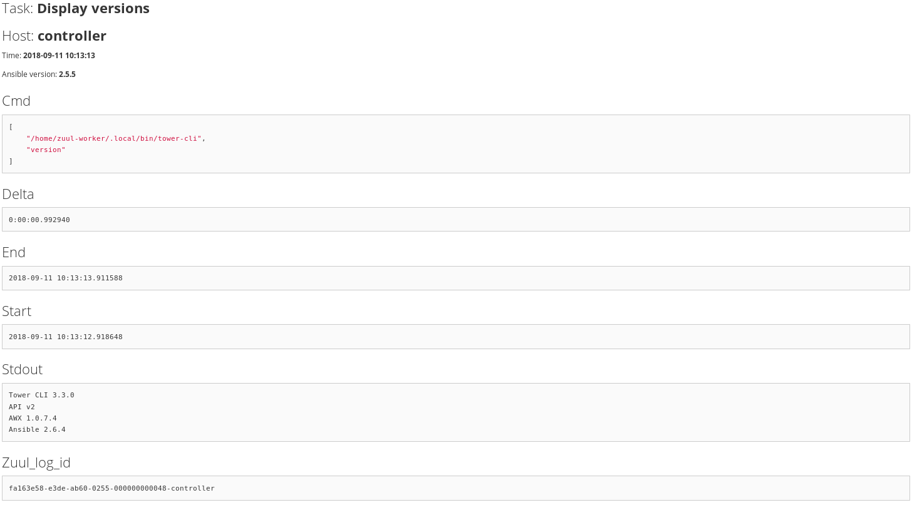

This article demonstrates how Zuul can be used to run integration tests on OpenShift. It presents a couple of jobs to test Operator and CRD templates as well as regular application deployment on OpenShift. Note that this is different from the Nodepool OpenShift driver as these jobs use a local OpenShift cluster.
Base Job and Roles
First, I wrote a job to install the requirements. It uses an origin_version variable to test different versions of OpenShift:
# zuul.d/openshift-job.yaml
---
- job:
name: openshift-integration
description: |
An abstract that installs requirements and pulls origin images.
pre-run: playbooks/openshift/requirements.yaml
abstract: yes
nodeset:
nodes:
- name: controller
label: centos-7
vars:
origin_repo: centos-release-openshift-origin310
origin_version: v3.10
Here is the requirements.yaml pre-run playbook:
# playbooks/openshift/requirements.yaml
---
- hosts: controller
become: yes
tasks:
- name: Install origin repository
yum:
name: "{{ origin_repo }}"
- name: Install requirements
yum:
name: "{{ item }}"
with_items:
- origin
- docker
- make
- maven
- name: Fix docker start options
lineinfile:
dest: /etc/sysconfig/docker
regexp: "^OPTIONS="
line: "OPTIONS='--selinux-enabled --log-driver=journald --signature-verification=false --insecure-registry 172.30.0.0/16'"
# See: https://github.com/openshift/origin/issues/15038
- name: Fix rhel secret issue
file:
path: /usr/share/rhel/secrets
state: absent
- name: Start docker service
service:
name: docker
state: started
- name: Pull origin images
command: "docker pull docker.io/openshift/{{ item }}:{{ origin_version }}"
with_items:
- origin-web-console
- origin-docker-registry
- origin-haproxy-router
- origin-deployer
- origin-sti-builder
- origin-pod
- origin
Here are the default deploy-openshift role's tasks:
# roles/openshift-deploy/tasks/main.yaml
---
- name: Deploy local openshift cluster
command: oc cluster up --insecure-skip-tls-verify=true
become: yes
- name: Create zuul user .kube directory
file:
path: "{{ ansible_env.HOME }}/.kube"
state: directory
- name: Setup zuul user kube config
copy:
src: /root/.kube/config
dest: "{{ ansible_env.HOME }}/.kube/config"
owner: "{{ ansible_env.USER }}"
mode: 0600
remote_src: yes
become: yes
- name: Login as system:admin
command: oc login -u system:admin
- name: Who am i
command: oc whoami -c
Using this job and role, it is relatively simple to do integration tests with OpenShift.
Radanalytics Operator and Tutorial Integration Tests
Radanalytics provides Operators and Tutorial application. In this example, I wanted to test the spark operator and the tutorial-sparkpi-java-vertx.
OpenShift Operator Integration test
I wrote a first job to build, deploy and test the operator standalone:
# zuul.d/openshift-job.yaml
---
- job:
name: openshift-integration-operator
parent: openshift-integration
run: playbooks/openshift/operator.yaml
description: |
A job that builds and deploys an operator
# Commented as the project is not configured in zuul
# required-projects:
# - radanalyticsio/spark-operator
vars:
operator_url: https://github.com/radanalyticsio/spark-operator/
- job:
name: openshift39-integration-operator
parent: openshift-integration-operator
vars:
origin_repo: centos-release-openshift-origin39
origin_version: v3.9
Note that Zuul isn't configured for this project, so I wrote a shim to fetch the source code as if Zuul prepared the workspace. Here is the test playbook:
# playbooks/openshift/operator.yaml
---
- hosts: controller
vars:
operator_src: "{{ ansible_env.HOME }}/src/github.com/radanalyticsio/spark-operator"
pre_tasks:
# Shim to manually fetch operator
- file:
path: "{{ operator_src }}"
state: directory
- git:
repo: "{{ operator_url }}"
dest: "{{ operator_src }}"
refspec: "{{ operator_ref | default(omit) }}"
version: "{{ operator_version | default(omit) }}"
# End of shim
- import_role: name=operator-build
- import_role: name=openshift-deploy
- import_role: name=operator-deploy
tasks:
- name: Verify operator is deployed
command: kubectl get pods
- name: Run operator tests
command: make test
args:
chdir: "{{ operator_src }}"
- name: Deploy example cluster
command: kubectl create -f examples/cluster.yaml
args:
chdir: "{{ operator_src }}"
- name: Wait for example to be running
command: oc get pods --field-selector=status.phase=Running -o "jsonpath={.items[?(@.metadata.labels.radanalytics\.io/podType=='master')].metadata.name}"
register: main_pod_name
retries: 600
delay: 1
until: "'spark-cluster' in main_pod_name.stdout"
- name: Get example cluster logs
command: "oc logs {{ main_pod_name.stdout }}"
The first task of this job is to build the operator locally so that the job can test Pull Requests speculatively. Here are the operator-build and operator-deploy roles:
# roles/operator-build/tasks/main.yaml
---
- name: Build the operator
command: make package
args:
chdir: "{{ operator_src }}"
- name: Build the operator image
command: make image-build-slim
become: yes
args:
chdir: "{{ operator_src }}"
- name: Tag image
command: docker tag radanalyticsio/spark-operator:slim radanalyticsio/spark-operator:latest
become: yes
# roles/operator-deploy/tasks/main.yaml
---
- name: Install the operator
command: kubectl create -f manifest/operator.yaml
args:
chdir: "{{ operator_src }}"
- name: Wait for operator pod to be running
command: oc get pods --field-selector=status.phase=Running -o "jsonpath={.items[?(@.metadata.labels.app\.kubernetes\.io/name=='spark-operator')].metadata.name}"
register: operator_pod_name
retries: 600
delay: 1
until: "'spark-operator' in operator_pod_name.stdout"
- name: Get operator logs
command: "oc logs {{ operator_pod_name.stdout }}"
I wrote these generic tasks as roles so that they can be easily re-used by the tutorial integration job.
Here is the ARA report of the openshift-integration-operator job:
And here is the last task output that displays a deployed spark cluster's logs using the operator:
With that first job in place, it's simple to do integration testing with the other Radanalytics projects.
OpenShift Operator Application Integration test
The second job I wrote tests the tutorial-sparkpi-java-vertx demo application:
# zuul.d/openshift-job.yaml
---
- job:
name: openshift-integration-operator-tutorial
parent: openshift-integration
run: playbooks/openshift/tutorial.yaml
description: |
A job that deploys an operator and tests the tutorial
# Commented as the projects are not configured in zuul
# required-projects:
# - radanalyticsio/spark-operator
# - radanalyticsio/tutorial-sparkpi-java-vertx
vars:
operator_url: https://github.com/radanalyticsio/spark-operator/
tutorial_url: https://github.com/radanalyticsio/tutorial-sparkpi-java-vertx
Here are the test playbook pre-tasks:
# playbooks/openshift/tutorial.yaml
---
- hosts: controller
vars:
operator_src: "{{ ansible_env.HOME }}/src/github.com/radanalyticsio/spark-operator"
tutorial_src: "{{ ansible_env.HOME }}/src/github.com/radanalyticsio/tutorial-sparkpi-java-vertx"
pre_tasks:
# Shim to manually fetch operator and tutorial
- name: "Create operator source clone directory"
file:
path: "{{ operator_src }}"
state: directory
- name: "Clone operator"
git:
repo: "{{ operator_url }}"
dest: "{{ operator_src }}"
refspec: "{{ operator_ref | default(omit) }}"
version: "{{ operator_version | default(omit) }}"
- name: "Create tutorial source clone directory"
file:
path: "{{ tutorial_src }}"
state: directory
- name: "Clone tutorial"
git:
repo: "{{ tutorial_url }}"
dest: "{{ tutorial_src }}"
refspec: "{{ tutorial_ref | default(omit) }}"
version: "{{ tutorial_version | default(omit) }}"
- name: "Merge PR to master"
command: "git {{ item }}"
with_items:
- show --raw
- branch pr
- checkout master
- merge pr
- show --raw
args:
chdir: "{{ tutorial_src }}"
when: tutorial_version != "master"
# End of shim
- import_role: name=operator-build
- import_role: name=openshift-deploy
- import_role: name=operator-deploy
The challenge here is that the tutorial uses a BuildConfig to build an image of the tutorial code before deployment. To do speculative tests, we need to serve the source code locally. Here are the tutorial build tasks:
# Serve the tutorial from speculative git ref
- name: Bare clone the tutorial to serve build config
command: "git clone --bare {{ tutorial_src }} /tmp/repo"
- name: Update git server info to enable dump http clone
command: "git update-server-info"
args:
chdir: /tmp/repo
- name: Setup a fake git server service
copy:
content: |
[Unit]
Description=Git service
After=syslog.target
[Service]
WorkingDirectory=/tmp/repo
ExecStart=/usr/bin/env python -m SimpleHTTPServer 8000
dest: /etc/systemd/system/gitserver.service
become: yes
- name: Start service
systemd:
name: gitserver
state: started
daemon-reload: yes
become: yes
- name: Deploy tutorial template
command: >
oc new-app --template oshinko-java-spark-build-dc
-p APPLICATION_NAME=vertx-sparkpi
-p GIT_URI="http://{{ ansible_default_ipv4.address }}:8000"
-p APP_FILE=sparkpi-app-1.0-SNAPSHOT-vertx.jar
-p SPARK_OPTIONS='--driver-java-options="-Dvertx.cacheDirBase=/tmp/vertx-cache"'
These tasks ensure that the application deployed is using the source prepared by Zuul. Next I wrote a few test tasks to verify that the application was working as expected. In this example, it makes sure the PI calculation is correct:
- name: Wait for build to complete
command: oc get builds -o "jsonpath={.items[?(@.metadata.labels.buildconfig=='vertx-sparkpi')].status.phase}"
register: _project_build
retries: 600
delay: 1
until: "'Complete' in _project_build.stdout"
- name: Get build name
command: oc get builds -o "jsonpath={.items[?(@.metadata.labels.buildconfig=='vertx-sparkpi')].metadata.name}"
register: build_name
- name: Grab build logs
command: "oc logs build/{{ build_name.stdout }}"
- name: Wait for project to be running
command: oc get pods --field-selector=status.phase=Running -o "jsonpath={.items[?(@.metadata.labels.app=='vertx-sparkpi')].metadata.name}"
register: tutorial_pod_name
retries: 600
delay: 1
until: "'vertx-sparkpi' in tutorial_pod_name.stdout"
- name: Grab pod logs
command: "oc logs {{ tutorial_pod_name.stdout }}"
- name: Expose an external route
command: oc expose svc/vertx-sparkpi
- name: Get route name
command: oc get routes/vertx-sparkpi "--template={{'{{'}}.spec.host {{'}}'}}"
register: spec_host
- name: Wait for service to be running
uri:
url: "http://{{ spec_host.stdout }}"
return_content: yes
register: webpage
retries: 600
delay: 1
until: "'Java Vert.x SparkPi server running' in webpage.content"
- name: Get PI result
uri:
url: "http://{{ spec_host.stdout }}/sparkpi"
return_content: yes
register: pi
- name: Check PI is correct
fail:
msg: "Couldn't compute PI"
when: not pi.content.startswith("Pi is rouuuughly 3.1")
Here is the ARA report of the openshift-integration-operator-tutorial job:
Project Configuration
Using these two jobs, we can make sure operator changes don't break the tutorial, and that the tutorial changes are working as expected. More importantly, we can test cross dependency changes. For example, Zuul can validate that the tutorial works with a new operator feature Pull Request. Here is an example configuration:
# zuul.d/project-config.yaml
---
- project:
name: radanalyticsio/spark-operator
check:
jobs:
- openshift-integration-operator
- openshift-integration-operator-tutorial
- openshift39-integration-operator
- project:
name: radanalyticsio/tutorial-sparkpi-java-vertx
check:
jobs:
- openshift-integration-operator-tutorial
Because Zuul isn't actually configured for the radanalytics projects, I had to use shims to setup the sources, here is a demonstration that manually tests a Pull Request:
# zuul.d/project-config.yaml
---
- project:
check:
jobs:
- openshift-integration-operator-tutorial:
vars:
tutorial_ref: 'refs/pull/8/head'
tutorial_version: 'FETCH_HEAD'
This Pull Request introduces an error in PI calculation by doubling the result, and the job failed as expected:
Ansible Tower deployment on OpenShift
Similar to the Radanalytics integration jobs, here is a job that tests Ansible Tower deployment on OpenShift:
# zuul.d/jobs.yaml
---
- job:
name: openshift-awx-install
parent: openshift-integration
description: |
A job that tests awx install on openshift
run: playbooks/awx/install-openshift.yaml
required-projects:
- name: ansible/awx
override-checkout: devel
Here are the test playbook pre-tasks:
# playbooks/awx/install-openshift.yaml
---
- hosts: controller
vars:
awx_src: "{{ ansible_env.HOME }}/src/github.com/ansible/awx"
pre_tasks:
- import_role: name=awx-build-image
- import_role: name=openshift-deploy
- import_role: name=awx-install-openshift
The challenge again is to use speculative images of Tower by the deployment playbook. Here are the awx-build-image and awx-install-openshift roles:
# roles/awx-build-image/tasks/main.yaml
---
- name: Build the image
command: ansible-playbook -i inventory build.yml
become: yes
args:
chdir: "{{ awx_src }}/installer"
environment:
# We need a more recent git to correctly discover awx_version
# The default git doesn't support --first-parent argument
PATH: "/opt/rh/rh-git29/root/bin/:{{ ansible_env.PATH }}"
# roles/awx-install-openshift/tasks/main.yaml
---
- name: Remove dockerhub_base variable
lineinfile:
path: "{{ awx_src }}/installer/inventory"
regexp: '^dockerhub_base='
line: '#dockerhub_base='
- name: Remove privileged command
lineinfile:
path: "{{ awx_src }}/installer/roles/kubernetes/tasks/openshift.yml"
regexp: '.*adm policy.*'
line: ' true'
# Fix: Failed to pull image "registry.access.redhat.com/rhscl/postgresql-96-rhel7"
- name: Fix postgres image location
replace:
path: "{{ awx_src }}/installer/roles/kubernetes/templates/postgresql-persistent.yml.j2"
regexp: 'registry.access.redhat.com.rhscl.postgresql-96-rhel7'
replace: 'centos/postgresql-96-centos7'
- name: Set privileged context
command: >
oc --context "default/127-0-0-1:8443/system:admin" \
adm policy add-scc-to-user privileged system:serviceaccount:myproject:awx
- name: Login with developer account
command: oc login -u developer -p developer
- name: Grab openshift token
command: oc whoami -t
register: openshift_token
- name: Install awx on openshift
command: >
ansible-playbook -i inventory \
-e openshift_host=127.0.0.1:8443 \
-e openshift_skip_tls_verify=True \
-e openshift_user=developer \
-e openshift_password=developer \
-e openshift_project=myproject \
-e kubernetes_task_image=172.30.1.1:5000/myproject/awx_task \
-e kubernetes_web_image=172.30.1.1:5000/myproject/awx_web \
-e openshift_pg_emptydir=yes \
-e docker_registry=172.30.1.1:5000 \
-e docker_registry_repository=myproject \
-e docker_registry_username=developer \
-e docker_registry_password={{ openshift_token.stdout }} \
install.yml
become: yes
args:
chdir: "{{ awx_src }}/installer"
environment:
# We need a more recent git to correctly discover awx_version
# The default git doesn't support --first-parent argument
PATH: "/opt/rh/rh-git29/root/bin/:{{ ansible_env.PATH }}"
These tasks ensure that the application deployed is using the source prepared by Zuul. Here are the rest of the openshift-awx-install test tasks:
- name: Verify pods are running
command: oc status
- name: Get route name
command: oc get routes/awx-web-svc "--template={{'{{'}}.spec.host {{'}}'}}"
register: spec_host
- name: Check web is working
uri:
url: "http://{{ spec_host.stdout }}"
return_content: yes
register: webpage
retries: 600
delay: 1
until: "'working...' in webpage.content"
- name: Install tower-cli
command: pip install --user ansible-tower-cli
- name: Configure host
command: "{{ ansible_env.HOME }}/.local/bin/tower-cli config host {{ spec_host.stdout }}"
- name: Login
command: "{{ ansible_env.HOME }}/.local/bin/tower-cli login --password password admin"
- name: Display versions
command: "{{ ansible_env.HOME }}/.local/bin/tower-cli version"
- name: Display roles
command: "{{ ansible_env.HOME }}/.local/bin/tower-cli role list"
Here is the ARA report of the openshift-awx-install job:

And here is a test task output:
Conclusion
Zuul can easily be used to run integration tests on OpenShift. Here are the Pull Requests containing the demonstration jobs: